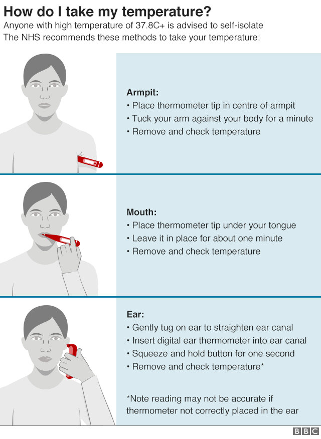

COVID-19 is a respiratory condition caused by a coronavirus.Some people are infected but don't notice any symptoms.Most people will have mild symptoms and get better on their own.But about 1 in 6 will have severe problems, such as trouble breathing. The odds of more serious symptoms are higher if you're older or have another health condition like diabetes or heart disease.
Note:-Symptoms may take up to 14 days to appear after exposure to COVID-19
Call a doctor or hospital right away if you have one or more of these COVID-19 symptoms:
COVID-19 can also cause problems including:
Some doctors are reporting rashes tied to COVID-19, including purple or blue lesions on children's toes and feet. Researchers are looking into these reports so they can understand the effect on people who have COVID-19.
Researchers say kids have many of the same COVID-19 symptoms as adults, but they tend to be milder. Common symptoms in children include:
Some children and teens who are in the hospital with the disease have an inflammatory syndrome that may be linked to the new coronavirus. Doctors call it pediatric multisystem inflammatory syndrome (PMIS). Symptoms include a fever, a rash, belly pain, vomiting, diarrhea, and heart problems. It's similar to toxic shock or to Kawasaki disease, a condition in children that causes inflammation in blood vessels.
Your regular body temperature may be higher or lower than someone else's. It also changes throughout the day. Doctors generally consider a fever in an adult to be anything over 100.4 F on an oral thermometer and over 100.8 F on a rectal thermometer.
If you think you've come into contact with the virus, or if you have symptoms, isolate yourself and check your temperature every morning and evening for at least 14 days. Keep track of the readings. A fever is the most common symptom of COVID-19, but it's sometimes below 100 F. In a child, a fever is a temperature above 100 F on an oral thermometer or 100.4 F on a rectal one
No. The coronavirus can affect multiple organs and has several less common symptoms.
Scientists using data on the health of four million people say Covid has six sub-types.
NOTE:- Researchers think that vomiting, diarrhoea and abdominal cramps could be a sign of coronavirus infection in children.
Lots of other viruses have similar symptoms to Covid, including flu and other infections. This will be a particular problem over winter when these bugs are more common.
Early studies have found that at least 60% of people with COVID-19 have a dry cough. About a third have a cough with mucus, called a "wet" or "productive" cough.
Dyspnea is the word doctors use for shortness of breath. It can feel like you:
Since they share so many symptoms, it can be hard to know which condition you have. But there are a few guidelines that can help.
You may have COVID-19 if you have a fever and trouble breathing, along with the symptoms listed above.
If you don't have problems breathing, it might be the flu. You should still isolate yourself just in case.
It's probably allergies if you don't have a fever but your eyes are itchy, you're sneezing, and you have a runny nose.
If you don't have a fever and your eyes aren't itchy, it's probably a cold.
Call your doctor if you're concerned about any symptoms. COVID-19 can range from mild to severe, so it may be hard to diagnose. Testing could be available in your area.
| Symptoms | Cold | Flu | Allergies | COVID-19 |
|---|---|---|---|---|
| Fever | Rare | High (100-102 F), Can last 3-4 days | Never | Common |
| Headache | Rare | Intense | Uncommon | Can be present |
| General aches, pains | Slight | Usual, often severe | Never | Can be present |
| Fatigue, weakness | Mild | Intense, can last up to 2-3 weeks | Sometimes | Can be present |
| Extreme exhaustion | Never | Usual (starts early) | Never | Can be present |
| Stuffy/runny nose | Common | Sometimes | Common | Has been reported |
| Sneezing | Usual | Sometimes | Usual | Has been reported |
| Sore throat | Common | Common | Sometimes | Has been reported |
| Cough | Mild to moderate | Common, can become severe | Sometimes | Common |
| Shortness of breath | Rare | Rare | Rare, except for those with allergic asthma |
In more serious infections |